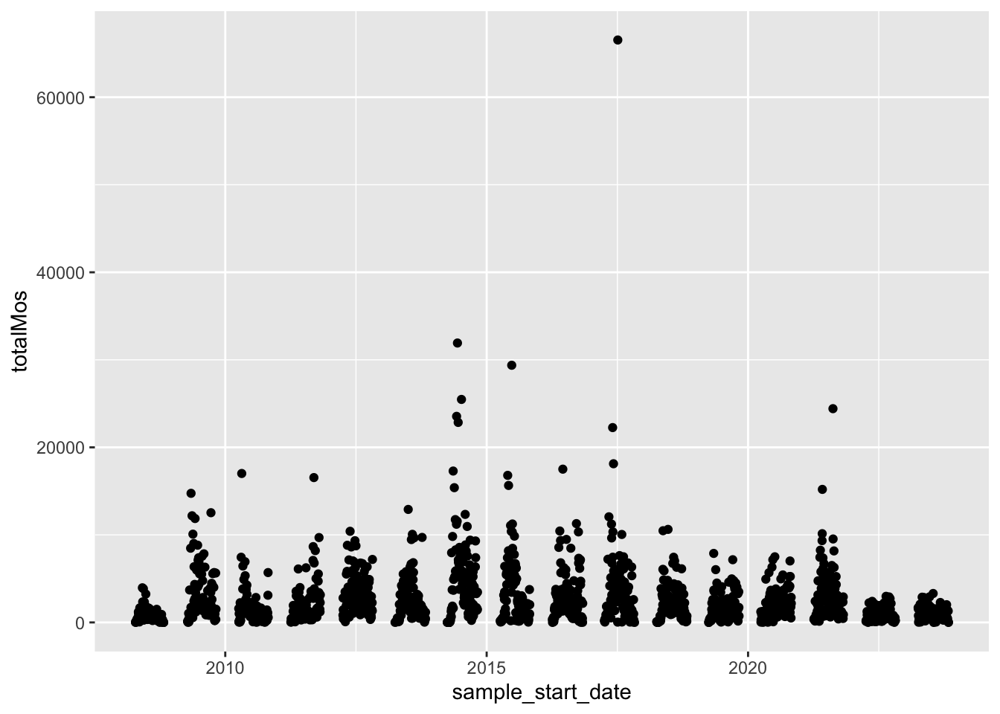
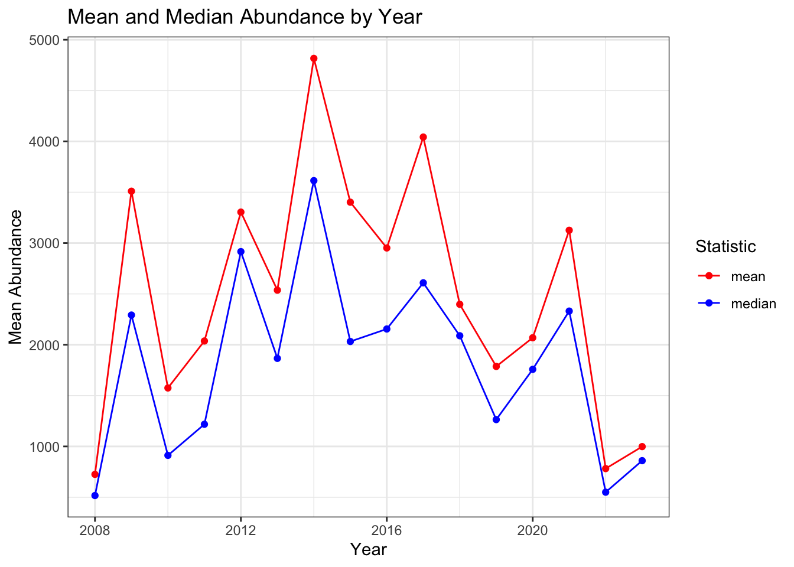
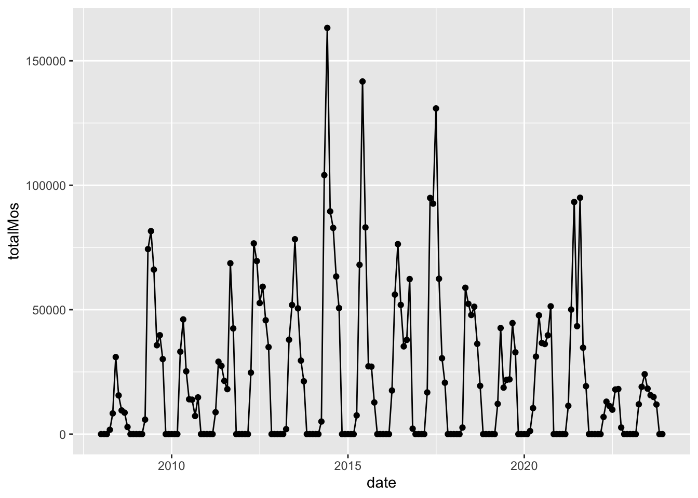
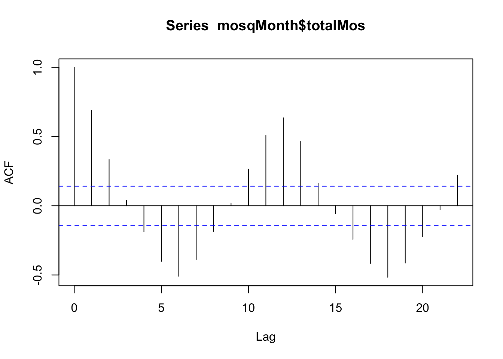
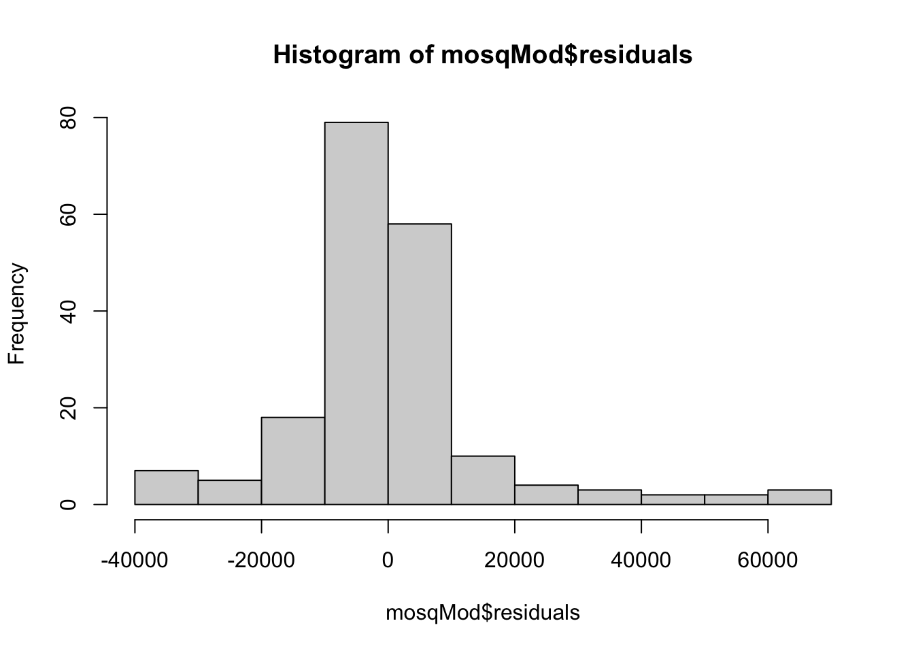
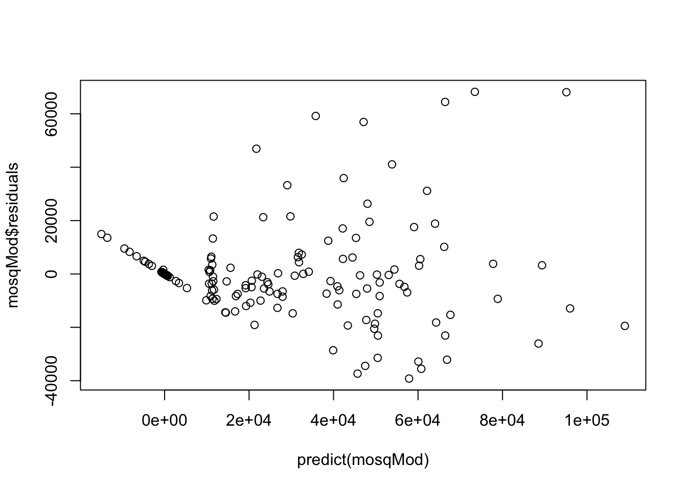
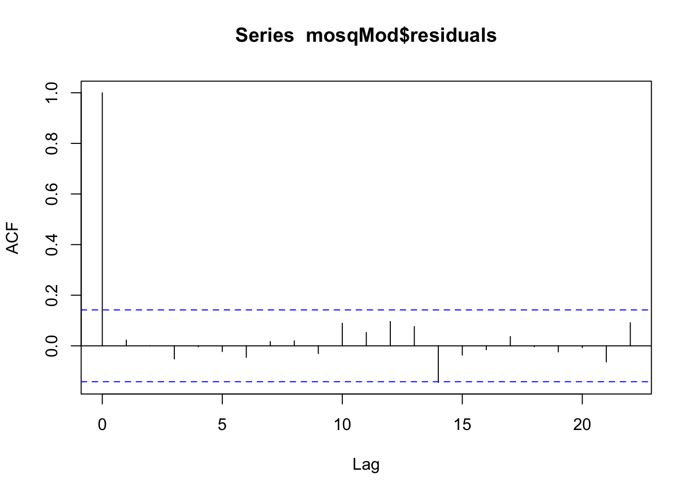
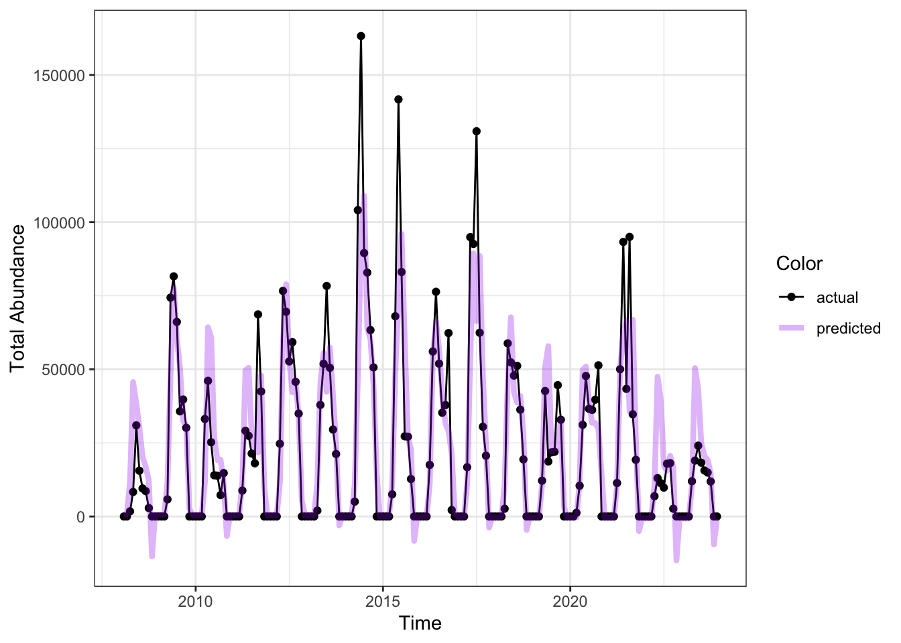

| year | n | mean | median | min | max | outliers |
|---|---|---|---|---|---|---|
| 2008 | 107 | 725.5234 | 517.0 | 1 | 3957 | 98 |
| 2009 | 95 | 3510.1789 | 2292.0 | 1 | 14749 | 98 |
| 2010 | 98 | 1574.9184 | 912.0 | 1 | 17015 | 98 |
| 2011 | 106 | 2036.8868 | 1218.0 | 1 | 16547 | 98 |
| 2012 | 110 | 3304.4545 | 2916.0 | 1 | 10412 | 98 |
| 2013 | 107 | 2536.8131 | 1866.0 | 1 | 12909 | 98 |
| 2014 | 116 | 4816.3448 | 3614.0 | 1 | 31920 | 98 |
| 2015 | 108 | 3401.8889 | 2032.0 | 1 | 29380 | 98 |
| 2016 | 115 | 2951.8870 | 2155.0 | 1 | 17509 | 98 |
| 2017 | 111 | 4042.4775 | 2609.0 | 1 | 66537 | 98 |
| 2018 | 112 | 2397.5893 | 2088.5 | 1 | 10629 | 98 |
| 2019 | 109 | 1786.6881 | 1264.0 | 0 | 7884 | 98 |
| 2020 | 123 | 2068.8455 | 1758.0 | 1 | 7498 | 98 |
| 2021 | 111 | 3126.1532 | 2331.0 | 1 | 24419 | 98 |
| 2022 | 102 | 781.9706 | 550.0 | 1 | 2981 | 98 |
| 2023 | 116 | 998.3017 | 860.0 | 0 | 3306 | 98 |
Reproducible Report
Background
In this section, you can write some background information to set up the rest of the report. This file is set up to help you explore how you can create reports that re-generate automatically when new data are introduced. We will explore ways that you can show or hide code as needed. You will use some of the concepts from the time-dependent regression practical into the report to see how it works.
In this section, we might want to tell the reader what kind of data we are looking at. For example, we might want to tell readers about the time frame represented in the data set and how many data points we have so far. For example:
This report includes mosquito abundance data collected by the Suffolk Virginia Mosquito Control group. It spans 16 years, from 2008 to 2023. The data set contains a total of 1746 collection days and 1177780 unique collections.
Add at least one more sentence to this section using inline code.
Data Summaries
In this section, we will display a table of the summary statistics. We will format it nicely instead of leaving it as is.
This table is a very simple version of what is possible. If you want, research the kableExtra package and see if you can add some simple customizations to this table to make it look nicer.
Data Exploration
In this section, we will visualized the raw and summarized collection data. In the raw data, we can easily see that data collection occurs seasonally. In other words, we have gaps in the data that we will need to deal with if we decide to model theses data.

Using summary statistics can help us visualize big picture patterns better. We can use the mean and median to see how they differ.

The year 2014 had the highest average mosquito abundance, with an average of 4816.3448276 mosquitoes observed. The year 2008 had the most outlier abundance observations. There were 98 total outliers in the data set.
Make one more plot that might be interesting and add some text to describe it using inline code
Model Fitting
We are going to fit a simple model to these data and look at the results. Note that there are gaps in these data, so our typical time series models may have trouble. However, we can collapse the data by month and impute 0s where collections did not occur (presumably because mosquitoes were absent or very nearly so). Then we can fit some simple time series models. Here, we will clean the data in secret but we will display the model fitting code to our readers (using echo = T) for full transparency.
Here are the aggregated data with zeros imputed for months where collections did not occur.

We can look at an autocorrelation function plot like we did in our examples to see if there is consistent autocorrelation between observations. It looks like the strongest correlations are with the 6- and 12-month lags.This suggests there is likely an annual pattern of fluctuation. We already saw that from the last graph as well.

There are two versions of the model to try out. Change the include and eval options on the code chunks and see how the rendered report differs.
Advanced option: try fitting your own model
mosqMonth$month <- as.factor(mosqMonth$month)
mosqMod <- lm(totalMos ~ time + totalMos_lag1 + month ,
data = mosqMonth)
summary(mosqMod)
Call:
lm(formula = totalMos ~ time + totalMos_lag1 + month, data = mosqMonth)
Residuals:
Min 1Q Median 3Q Max
-39204 -5989 -239 1454 68250
Coefficients:
Estimate Std. Error t value Pr(>|t|)
(Intercept) 7.316e+02 4.831e+03 0.151 0.8798
time -7.542e+00 2.207e+01 -0.342 0.7330
totalMos_lag1 5.986e-01 6.021e-02 9.943 < 2e-16 ***
month2 -3.771e+01 6.029e+03 -0.006 0.9950
month3 4.821e+01 6.028e+03 0.008 0.9936
month4 1.109e+04 6.028e+03 1.840 0.0675 .
month5 4.394e+04 6.065e+03 7.245 1.28e-11 ***
month6 3.267e+04 6.754e+03 4.838 2.84e-06 ***
month7 1.111e+04 7.122e+03 1.560 0.1205
month8 1.032e+04 6.707e+03 1.539 0.1256
month9 1.052e+04 6.482e+03 1.623 0.1064
month10 6.454e+03 6.370e+03 1.013 0.3124
month11 -1.593e+04 6.243e+03 -2.552 0.0116 *
month12 -4.427e+01 6.029e+03 -0.007 0.9941
---
Signif. codes: 0 '***' 0.001 '**' 0.01 '*' 0.05 '.' 0.1 ' ' 1
Residual standard error: 16770 on 177 degrees of freedom
Multiple R-squared: 0.7184, Adjusted R-squared: 0.6977
F-statistic: 34.73 on 13 and 177 DF, p-value: < 2.2e-16In a true report, we might want to write some text here about the kind of model we fitted to accompany our code. Try that out here to practice communicating about models.
Residual Diagnostics
The residual plots show that having 0 abundance during certain months consistently causes a problem for our model. Think of some other ways we could approach modeling these data that would alleviate this problem.



Model Performance
Here is a plot of the model predictions overlaid on the actual observations. The model \(R^2\) was 0.72, which means that 72% of the variation in the data was explained by the model.

Conclusions and Limitations
It is always good to think about how our models do well and where they fall short to help make appropriate conclusions from the model. Depending on the model you chose to use, the strengths and limitations will be different.
Take a minute and write about how the model did well and where we could improve or should at least use caution in trusting its conclusions. Try using some inline code to allow the report to be flexible. For example, 40 of the predictions were below zero, which is not possible in reality.
Challenge
Using the skills you learned in the time-dependent covariate module, gather mean monthly temperature data for Suffolk, VA for the appropriate time frame and include temperature as a covariate in your model. Consider transforming the response variable (e.g., taking a square-root) to address non-homoskedastic elements of the data.
Citation
BibTeX citation:
@online{network2026,
author = {Network, VB},
title = {Reproducible {Report}},
date = {2026-05-29},
langid = {en}
}
For attribution, please cite this work as:
Network, VB. 2026. “Reproducible Report.” May 29.